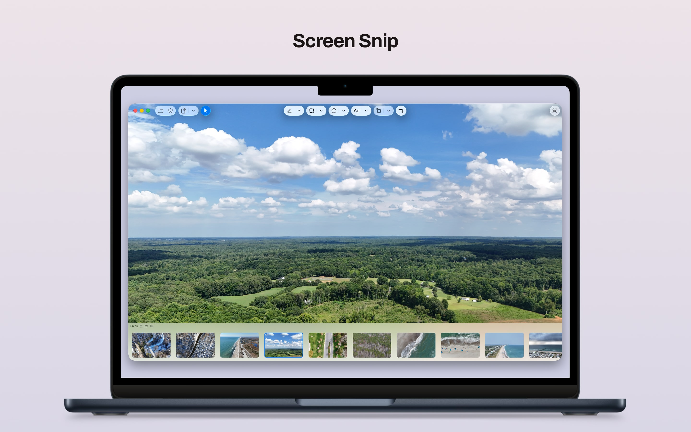
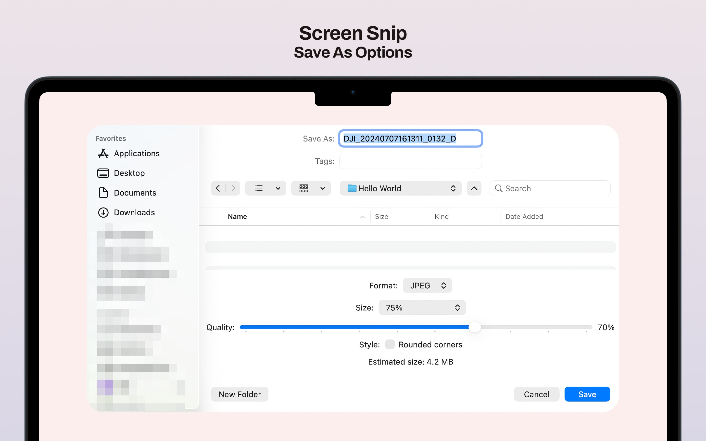
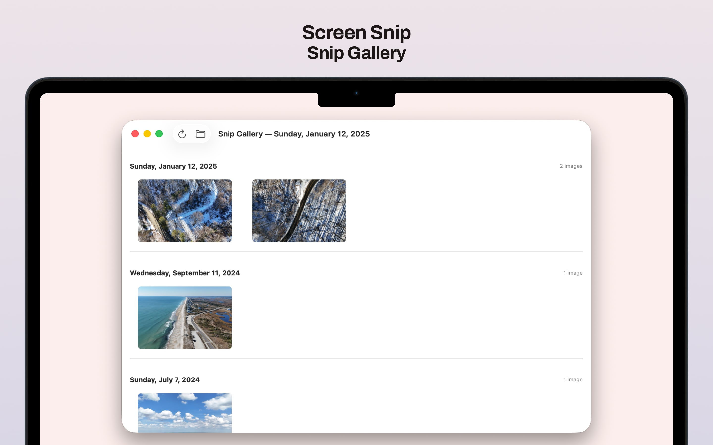

Capture from anywhere
Use the global shortcut to start a snip even when Screen Snip is running quietly in the background.
Screenshot Utility for macOS
Screen Snip is built for fast Mac workflows: quick capture, precise markup, flexible export, and a native interface that stays out of the way.



For people who take a lot of screenshots and want the job done without turning it into a mini design project.
Features
Use the global shortcut to start a snip even when Screen Snip is running quietly in the background.
Draw with pen, arrow, highlighter, rectangle, oval, badge, and text tools without making the app feel heavy.
Hide sensitive details, frame what matters, and rotate the image or placed objects when the screenshot needs cleanup.
Copy, save, or use Save As with PNG, JPG, and HEIC output plus quality controls where they make sense.
Browse your screenshots by date and reopen previous work quickly when you need to revisit a capture.
Screen Snip is free to use, and the full source is available publicly if you want to inspect it, build it, or contribute.
Multi-monitor support, Retina-aware downsampling options, trackpad zoom gestures, and Finder Open With integration.
Your images stay on your Mac unless you choose to export or share them. The app does not use the network.
No recurring fees, no upsells, and no account wall between you and the app.
Learn More
Support and privacy live alongside the site, and the GitHub repository covers the more technical side with source, build details, and project documentation.